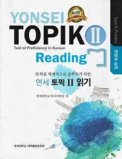

YTTOPIK II imtihonining o'qish bo'limiga tayyorgarlik ko'rish uchun mo'ljallangan qo'llanma.
Ushbu qo'llanma koreys tili imtihoni bo'lgan TOPIK II ning o'qish (Reading) bo'limiga tayyorlanish uchun mo'ljallangan. Kitobda turli test topshiriqlari, mashqlar va ularning tahlillari keltirilgan.